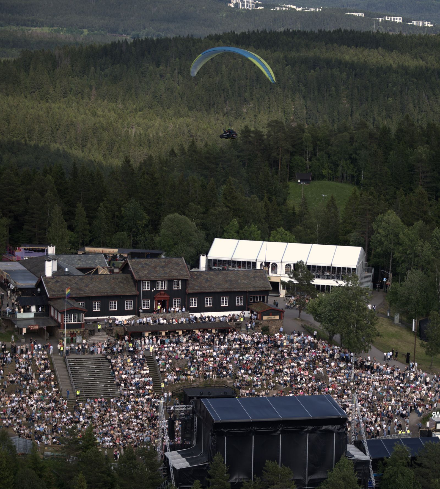
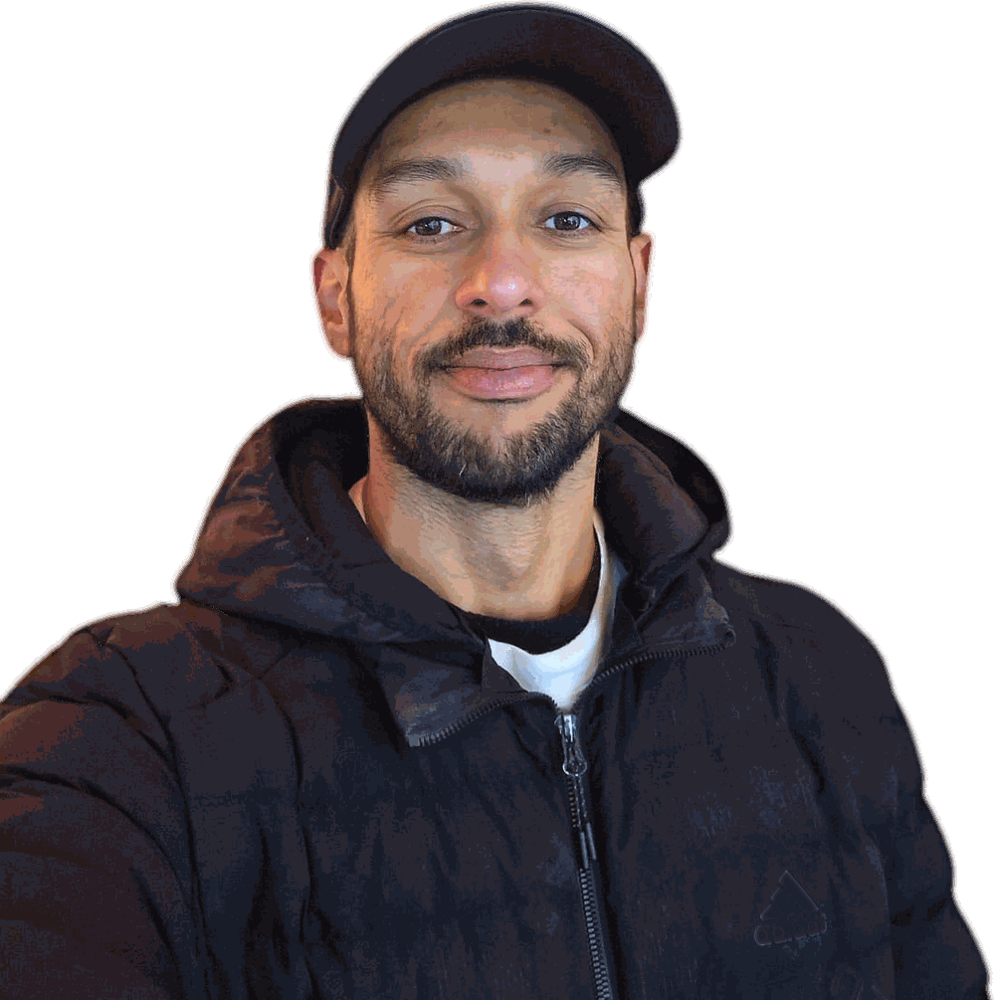

Reach The Pilots Who Come Here To Learn
I'm Aninder. I host the Paragliding Atlas podcast, build the knowledge base from those conversations, and guide small-group expeditions.
Every episode, page and trip here is run by me, so a partnership is one conversation with one person, from first email to finished work.
- Podcast streams
- 100,000+
- Countries reached
- 130+
- Long-form interviews
- 80
- Years flying
- 10+
Some of the conversations pilots come back to
See every episode →



Oslo, 2025Over a festival crowd
The Name Flies With Me
Every flight carries the Paragliding Atlas name, on the harness and on camera.
Above a festival in Oslo in 2025, a whole crowd looked up at once. A brand in the air reaches people in a way no feed can.
The Speed Record Attempt
Two world records for speed: 100 km and 200 km, out and return.
- Window
- 18 Jan to 12 Feb 2027
- Title Partner
- Your mark on kit and on camera
Four Places Your Brand Can Sit
Every partnership is shaped around what you want pilots to know, and every one is clearly marked as sponsored.
PodcastSponsored segments
A segment in a long-form episode, disclosed at the start, heard by pilots who stay for the whole conversation.
NewsletterThe Atlas list
A sponsor slot in my newsletter, which goes out about four times a month with new episodes, trip updates and field notes.
VideoYouTube episodes
An integration in the video edition of an episode on my YouTube channel.
ExpeditionsTour partners
Gear, instruments or services in the hands of pilots on my Kenya and India expeditions.
The Trust Is The Product
Pilots come here because the knowledge is honest. That is what makes a mention here worth something, so I protect it in every partnership.

- I clearly mark sponsored episodes and segments and disclose them at the start of the episode.
- I only partner with brands and products I believe in and that align with my values.
- Editorial independence stays with me. When I review a product, I say if it was provided free and disclose any relationship with the manufacturer.
- Affiliate relationships are disclosed in the episode description.

Aninder SinghHost, Paragliding AtlasThe full policy is on the Safety & Disclosure page.
Tell Me About Your Brand And Who You Want To Reach
Write a few lines here. I will reply with current audience numbers and the formats that fit what you have in mind.
Prefer your own email? aninder@paraglidingatlas.com